本區塊僅整理政府資料開放平臺實際回傳的資料集內容；資料正確性與更新時間以發布機關公告為準。
⌖
台灣智慧生活
正在取得目前位置...
請點擊地圖上的公車站牌
點選地圖查看地方資訊；按左上角「圖層」切換交通資訊
伺服器控制
管理員
- 可用憑證
- -
- TDX 快取
- -
公告管理
預設依發布時間由新到舊排列；調整後會套用到所有裝置。
常用網站
相關連結
政府與公共服務
交通與旅運
天氣與防災
購物與電商
影音與音樂
辦公與協作
金融、繳費與發票
新聞與即時資訊
地圖與旅遊
社群與通訊
餐飲與外送
學習與知識
求職與職涯
AI 與雲端工具
健康與生活安全
快速上手
網站使用教學
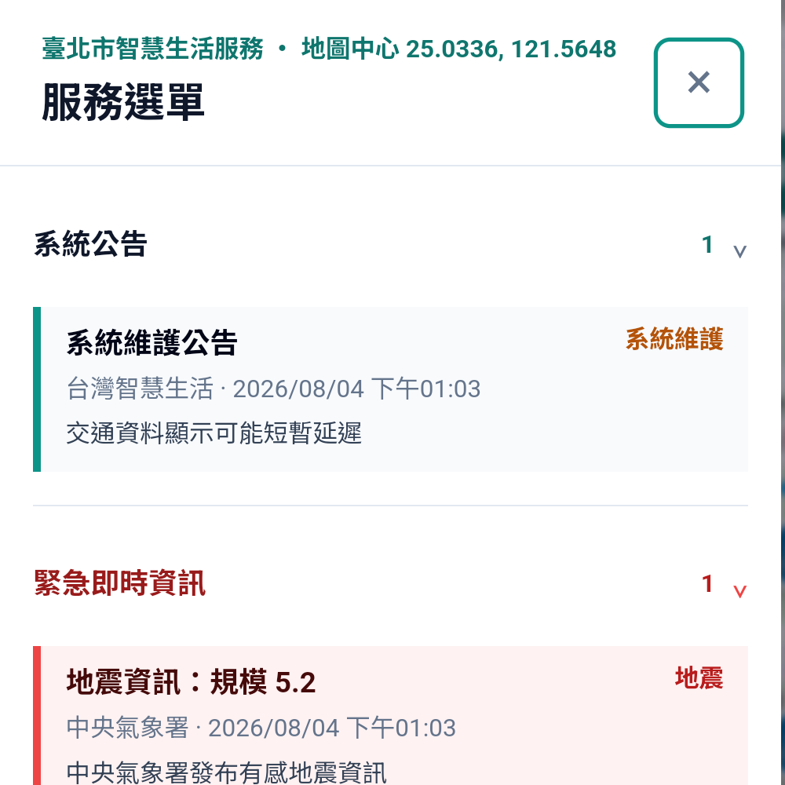
公告與緊急資訊
- 開啟「服務選單」即可看到最新一則系統公告與中央氣象署緊急即時資訊。
- 點擊「系統公告」或「緊急即時資訊」標題可展開全部歷史；點擊單則標題可查看完整內容與影響區域。
- Android、iPhone 或 iPad App 收到新的中央氣象署緊急資訊時會依系統背景排程發出通知；網頁版只在服務選單顯示。
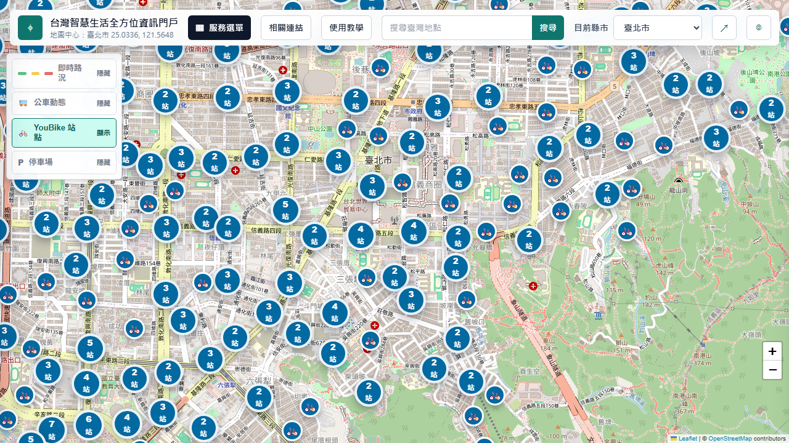
1. 定位、搜尋與移動地圖
- 首次進入會詢問定位權限；取得位置後立即移到目前所在地，10 秒仍無結果則以台北 101 為中心。按右上角「◎」可重新定位。
- 在上方搜尋欄輸入至少 2 個字，選擇搜尋結果即可前往該位置；桌機也可使用「目前縣市」選單快速切換。
- 拖曳地圖或使用滾輪、雙指、右下角加減按鈕縮放。手動操作停止滿 5 秒後才會更新該地交通資料。
- 接近縣市邊界時，地圖中心周圍 500 公尺都進入另一縣市後才切換資料，避免在邊界重複讀取。
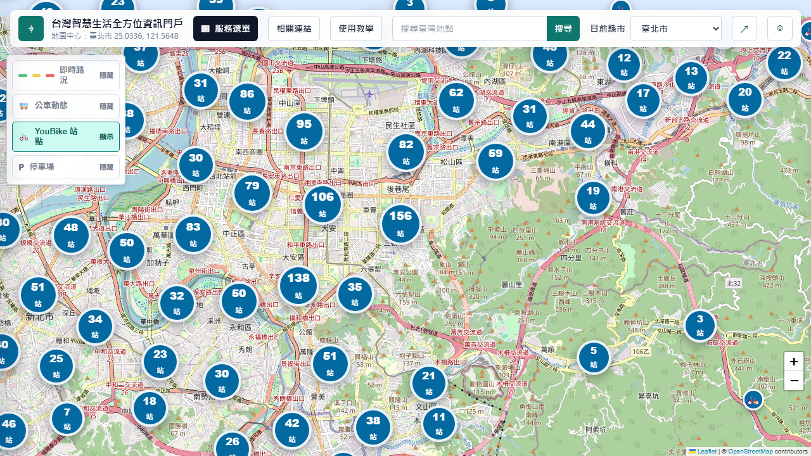
2. 交通圖層與數量群組
- 先按左上角「圖層」展開清單，再分別開關「公車動態」、「YouBike 站點」與「停車場」；按鈕會顯示目前是讀取中、顯示或隱藏。「即時路況」功能目前暫不開放。
- YouBike 與停車場標記較多，縮小地圖時圓圈會顯示區域內站點／停車場數量，放大後會拆成個別標記。
- YouBike 與停車場不能同時開啟；切換其中一個時，另一個會自動關閉，避免標記互相遮擋。
- 公車動態由伺服器每 12 秒更新；YouBike、停車場與固定資料每 5 分鐘更新。所有資料都讀取伺服器共用快取。
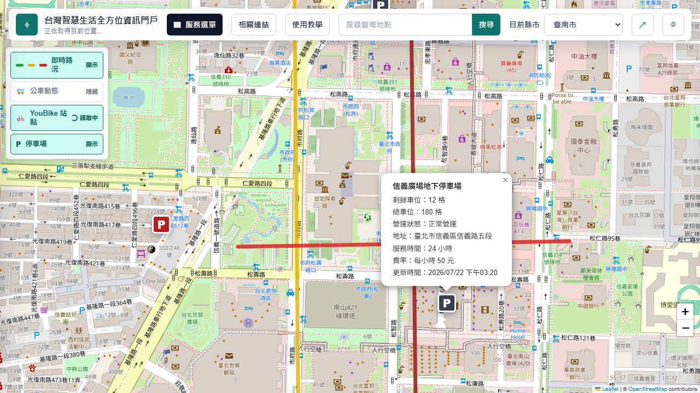
3. 即時路況與停車場
- 即時路況功能目前暫不開放，敬請見諒。
- 開啟停車場後，點選「P」標記可查看剩餘車位、總車位、營運狀態、地址、電話、服務時間與費率；未提供即時車位時會明確標示。
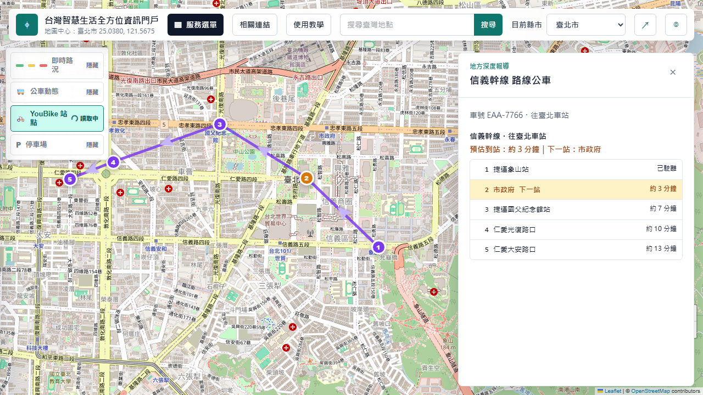
4. 公車動態、路線與站牌
- 開啟「公車動態」後，公車圖示方向代表行進方向；點選車輛可查看路線、車牌、狀態與速度。
- 公車詳情會隱藏其他車輛與附近站牌，只保留所選車輛、完整路線、沿線站點及淡紫色行進方向箭頭；橘色項目是下一站。
- 手機可按資訊面板的「⌄」縮小面板查看完整路線，再按一次展開；按「×」才會結束該車詳情並恢復附近站牌。
- 點選紫色站牌可查看經過該站的所有公車、預估到站時間與車牌，並可分享站點。
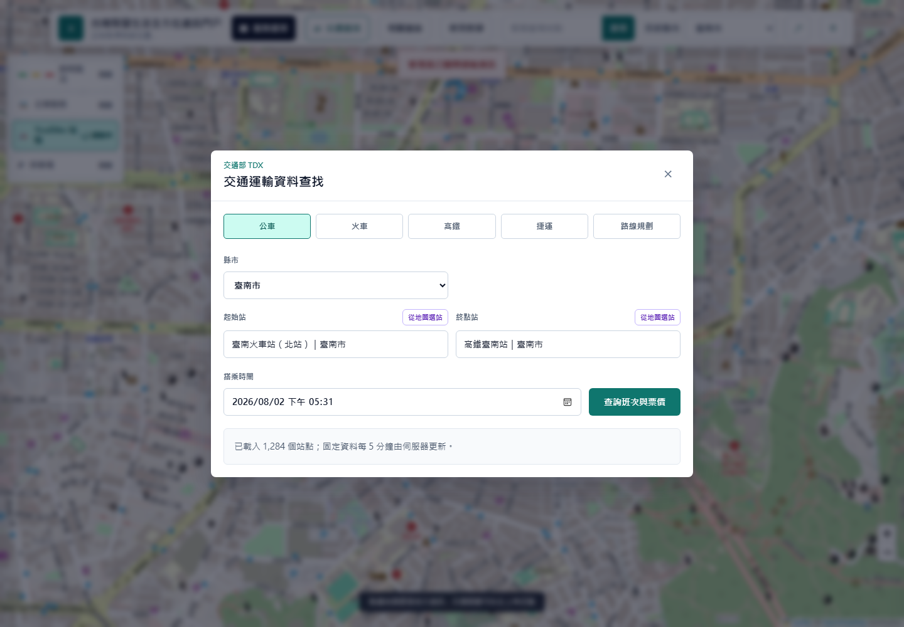
5. 交通查找與班次追蹤
- 按頁首「交通查找」，可分別查找公車、火車、高鐵或捷運；單一運具頁籤內的轉乘只使用目前選擇的運具。
- 手機上的公車、火車、高鐵與捷運起訖站皆使用原生選單；公車也可按「從地圖選站」，地圖會以數量群組顯示所選縣市的全部站點。
- 火車起點與終點可分別選擇縣市，站序從基隆開始沿西部向南、再由東部返回北部；高鐵從南港到左營排列。
- 搭乘時間僅開放今天起 28 天內已有近期班表的日期；結果只列出尚未離開搭乘點、目前仍可搭乘的方案，公車依抵達起點的預估時間排序。
- 規劃期間按鈕與狀態列會持續顯示旋轉圖示及跳動圓點；每筆結果都可按「在主地圖顯示路線」，橘色「轉」代表轉乘站。
- 班次查詢與路線規劃期間可按「暫停查詢」，再次按「繼續查詢」會沿用原條件重新開始；資料服務忙碌時會自動重試最多 15 秒。
- 起終站或起終地點中間的「⇄」可立即交換兩端；火車查找也會一併交換起點與終點縣市。
- 「路線規劃」可從選單使用目前裝置定位或我的最愛，也可輸入地址、地標或車站；按起點或終點旁的「從地圖選擇」後，拖曳地圖讓中心圖標對準位置，再按「使用此位置」即可帶回表單。
- 「路線規劃」會依起訖點距離、一般行駛速度、道路繞行與候車時間，快速列出每一種交通方式的大致總時間，不會在本站等待完整路線計算。
- 每種交通方式下方都有 Google 地圖導航；使用 iPhone、iPad 或 Mac 時也會顯示 Apple 地圖，可直接帶入目前設定的起點與終點。
- 標示「目前行駛中，可追蹤」的班次可按下追蹤按鈕。路線預覽或追蹤期間會中止一般交通圖層讀取並隱藏其他圖層，只保留選定路線、轉乘站與動態位置。
- 按「結束預覽並還原圖層」、「結束追蹤並還原圖層」或關閉右側／底部資訊面板，會恢復進入前每一個交通圖層的開關狀態。
- 臺鐵顯示最近離站／經過站；高鐵與多數捷運依時刻表推估位置。畫面會標示資料精確度，不會將推估位置標示為 GPS。
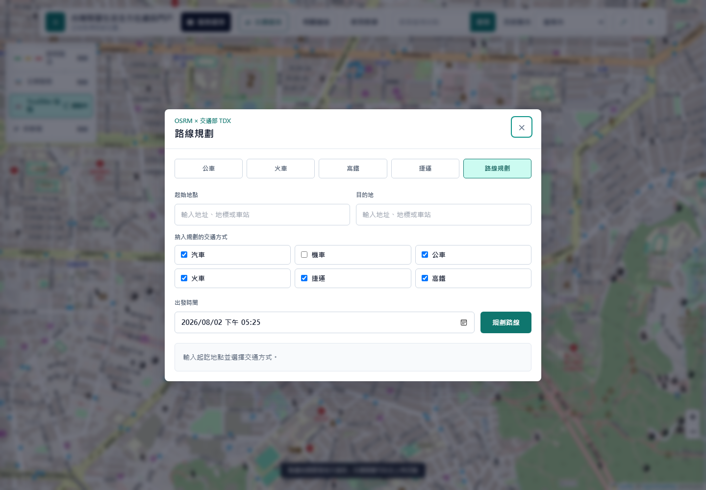
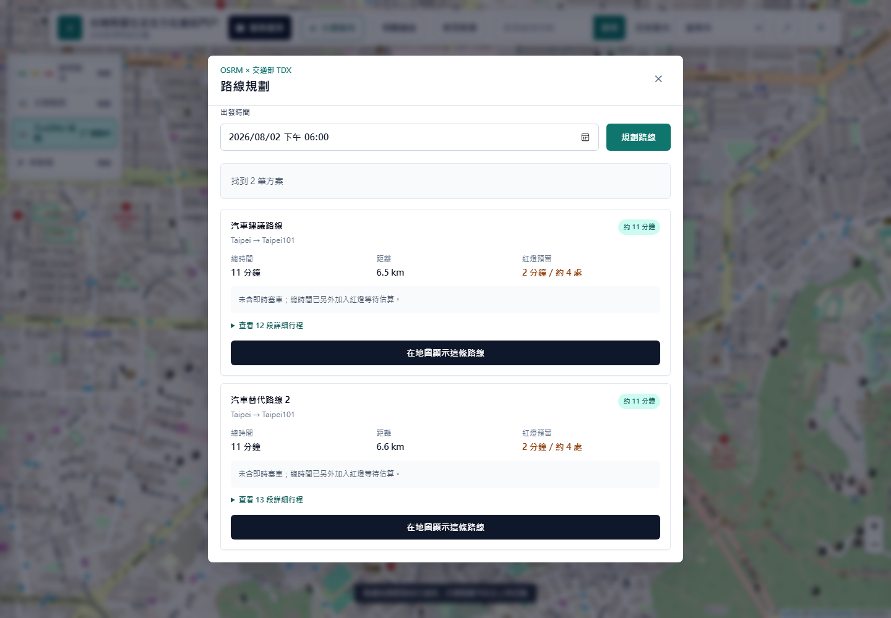
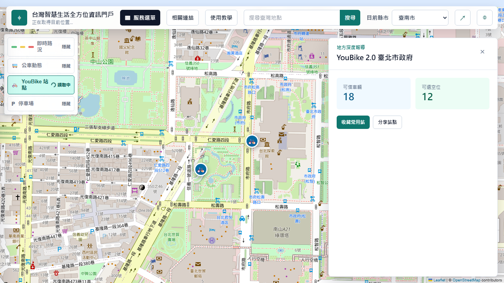
6. YouBike 站點
- 開啟 YouBike 圖層並放大數量群組，點選單車圖示可查看站名、可借車輛與可還空位。
- 「分享站點」會使用系統分享功能，無法使用時則複製網址。
- 若即時額度暫時不足，仍可能顯示伺服器快取的站點位置，但可借與可還數量會標示為未提供。
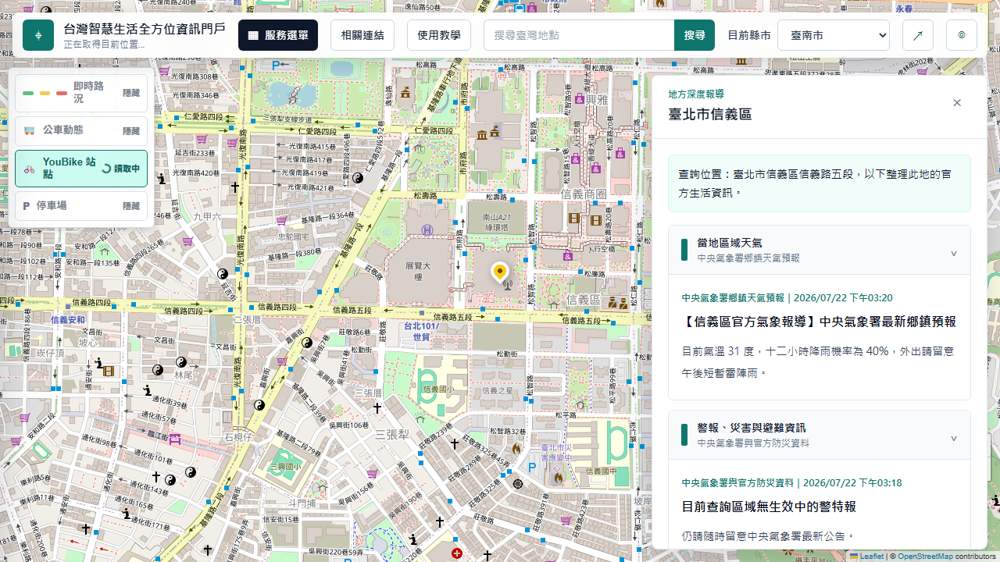
7. 點選地圖查看地方資訊
- 直接點選地圖任一位置，黃色圖釘會標示查詢點，右側面板（手機為底部面板）會辨識縣市與行政區。
- 面板會整理目前天氣、降雨、風力、氣象警特報、近期地震，以及政府開放資料中的地方生活資訊。
- 每個主題資料夾可展開查看摘要、來源與更新時間；點面板右上角「×」即可關閉。
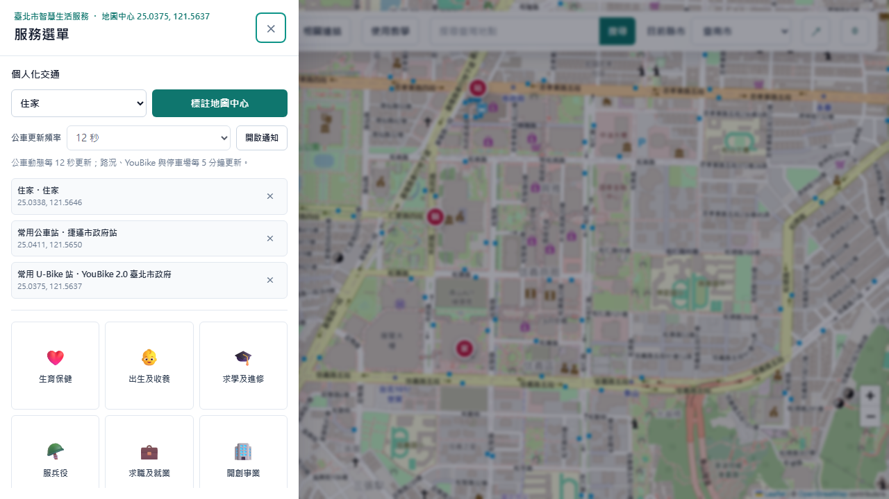
8. 我的最愛地點
- 把地圖中心移到目標位置後，開啟「服務選單」並按「收藏地圖中心」，輸入名稱即可加入我的最愛。
- 點選最愛地點可直接將主地圖定位到該處；按「✎」可隨時重新命名，按「×」可刪除。
- 路線規劃的起點與目的地選單會同步顯示所有我的最愛地點。
- 我的最愛保存在目前瀏覽器；清除網站資料或改用其他裝置後需重新加入。
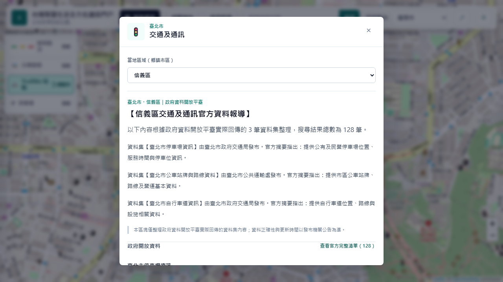
9. 生活服務與政府開放資料
- 在「服務選單」下方選擇生育保健、求職就業、交通、醫療等生活分類。
- 在彈出視窗選擇行政區，可查看該區主題報導、發布機關與政府資料集摘要。
- 「查看完整清單」會前往政府資料開放平臺；若該縣市有專屬 API，也會提供開啟連結。
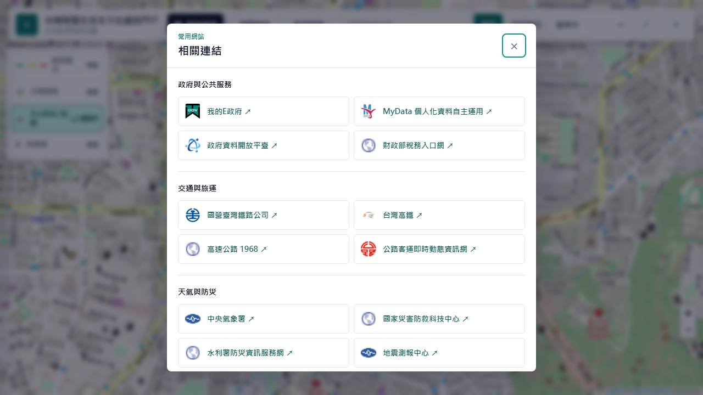
10. 相關連結與分享
- 「相關連結」依政府、交通、氣象、新聞、購物、學習、求職、社群等主題整理常用網站；點選後會在新分頁開啟。
- 桌機上方的「↗」可分享目前地圖中心、縮放層級與已選站點；支援系統分享時會開啟分享選單，否則複製網址。
- 分享網址開啟後會還原地圖位置，若包含公車站或 YouBike 站也會直接開啟該站詳情。
交通部 TDX
交通運輸資料查找
正在載入站點...
輸入起訖地點並選擇交通方式。